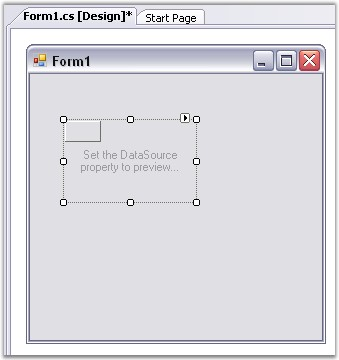
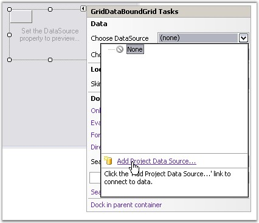
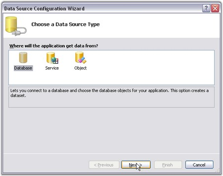
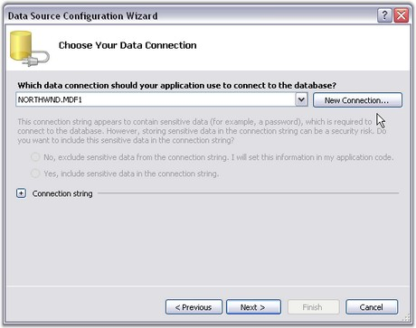
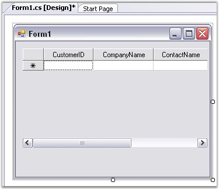
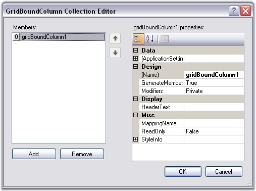
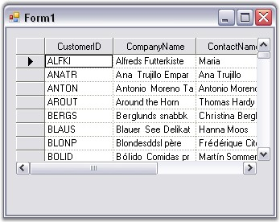

With the designer, all you have to do is drag the Grid Data Bound Grid control, resize it and then set the desired properties. The following steps illustrate this.
1. Drag a GridBoundDataGrid object from your toolbox onto the form.

Figure 200: Grid Data Bound Grid dragged from the toolbox onto the Form
2. Size and position it.
3. Click the Smart tag, expand Choose DataSource combo box and click Add Project DataSource.

Figure 201: Add Project Data Source Option selected through Smart Tag
4. In the Data Source Configuration wizard, select Database and click Next.

Figure 202: Data Source Type set to "Database" in the Data Source Configuration Wizard Dialog Box
5. Select appropriate data connection and click Next. This example uses Northwind database which is available in the below path:
<Sample Install Location>\Syncfusion\EssentialStudio\x.x.x.x\Common\Data

Figure 203: Data Connection Set
6. Select appropriate table and data using this wizard.

Figure 204: Table and Data Selected
7. To customize columns, open the GridBoundColumns collection by clicking that property in the Grid Data Bound Grid. With this editor, you can determine exactly, which columns of the data source are displayed in the grid. You can also set the column properties like backcolor and font.

Figure 205: Customizing Columns by using the GridBoundColumn Collection Editor
8. Run the application. Following is the output.

Figure 206: GridBoundColumn created Through Designer
Grid Data Bound Grid is added to the windows application and bound to a local data source. For more details, see Grid Data Bound Grid tutorial.